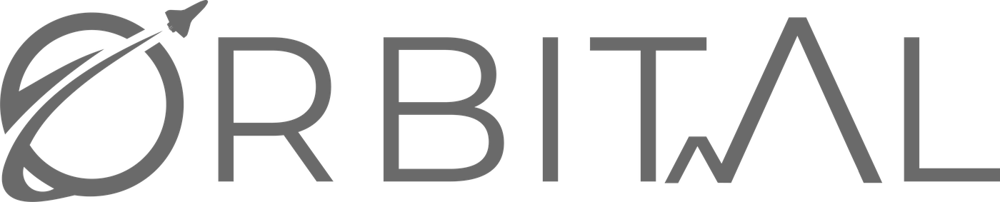

Ninguna alarma ha sonado. Todos sus valores están dentro de lo normal.
Pero esta historia empezó seis días antes, con un cambio tan pequeño que nadie lo notó. Ni ella.
Por eso creamos ORBITAL: un sistema que
para cada astronauta, no contra un promedio.
una señal clara, a tiempo, antes de los síntomas.
cuando no hay nadie cerca.
Inteligencia de salud para la exploración espacial — cuerpo y mente.
Con datos de wearables, un modelo de series de tiempo aprende cómo evoluciona cada quien. Cuando una medición se sale de su banda, enciende una sola alarma: clara y a tiempo, antes de los síntomas.
Responde con documentación técnica y referencia la fuente. No diagnostica ni reemplaza a un médico: ayuda a entender y a saber qué consultar.
Se descarga antes de la misión y opera local y centralizado a bordo, sin internet ni comunicación con la Tierra.
Un MVP para misiones de larga duración.
No la compara con un promedio: la compara con ella.
No le habla con una alarma: le explica qué ve y le propone una acción concreta.
Tres decisiones.
La línea base es individual: cada quien es su propia referencia.
Un tablero lleno de rojos convierte el monitoreo en otra fuente de estrés — y el estrés y el mal sueño son justo lo que queremos detectar. Por eso está diseñado para transmitir calma: una cosa a la vez, y una perilla que gira para cambiar de tema.
Nuestras reglas parten de estándares de la NASA referenciados en la documentación, y de gestión de riesgos: indicadores adelantados y comparación contra la línea base, no solo contra el límite.
No sabemos si ORBITAL habría cambiado el desenlace. Lo que sí sabemos es qué habría tenido en la mano: el día 3, no las 02:17.
La exploración espacial no se trata solo de llegar más lejos. Se trata de cuidar a las personas que hacen posible llegar hasta allá.
Cuando la Tierra está demasiado lejos, anticiparse puede marcar la diferencia.

Inteligencia de salud para la exploración espacial — cuerpo y mente.
Equipo Tacos de Asada · IPN — Sistemas Computacionales, IA y Ciencia de Datos.
Open-source y corre local. ~210 h-persona (~$42k MXN de valor).
Equipo de 6. Para un piloto: ~4 de tiempo completo durante 6 meses.
En 12–18 meses: equipo, wearables, validación, legal, cómputo y comercial.
Agencias: $50k–250k USD/año
Terrestre: $500–2,000 USD/sitio·mes
Contratos de I+D (no dilutivo)
SECIHTI, incubadora IPN, premios → piloto pagado / LOI → ángel / pre-seed.
Y por valor evitado: una evacuación o EVA abortada paga años de licencia.
El dolor no es falta de datos: es falta de contexto y soledad médica.
Calificamos cada idea (1–3) contra dos restricciones: dato de la NASA y prototipo en un día.
Ronda en silencio → Dato · Canal · Momento → idea finalista.
Fuentes de la NASA (HRP) y gestión de riesgos: matriz probabilidad × severidad, jerarquía de controles, GP = C × E × P (William Fine) y GR = medido ÷ límite. Cada rasgo de ORBITAL es trazable a un eslabón anterior.
Te comparamos contigo, no con un promedio.
Triaje ¿cuerpo o mente?, al mismo nivel.
Indicadores adelantados y deriva lenta.
No estresar: una cosa a la vez.
Sin nube, a 200 millones de km.
Traduce y guía citando documento y página; no diagnostica.
Capas independientes: si el asistente cae, la salud sigue.
Si el modelo falla, los límites clínicos siguen; nunca anulan un valor peligroso.
Los números se calculan sin IA; el LLM solo redacta y se verifica contra la fuente.
Un corte con la Tierra no lo rompe.
Se reinicia con un comando; umbrales por archivo, sin tocar código. El estado se guarda.
Es orientativo; la tripulación conserva sus protocolos.
Chronos-2 + baseline (media móvil exponencial) aprenden la línea base por persona. Isolation Forest y z-score detectan anomalías y deriva lenta. Capa de límites clínicos e inferencias deterministas con códigos.
PDFs de la NASA → BGE-M3 → índice FAISS. Recupera fragmentos y un LLM local (Qwen vía LM Studio) redacta citando archivo y página. Búsqueda obligatoria: no inventa.
FastAPI expone todo y sirve la interfaz. SSE para datos en vivo y chat. Datos y modelos en archivos locales.
Cero nube, costo de infraestructura casi nulo. El LLM solo traduce; lo que decide es determinista y auditable.
Integrar más pruebas de evaluación cognitiva: atención, memoria, tiempo de reacción y estado de ánimo.
Sumar señales como SpO₂, variabilidad cardiaca, actividad y exposición a radiación.
Alimentar el asistente con más protocolos y guías clínicas, siempre citando la fuente.
Interacción completa speech-to-speech: hablar con Orbi con las manos ocupadas, sin pantalla.
Llevar ORBITAL a móviles, tabletas y smartwatch, sin perder el modo local y offline.